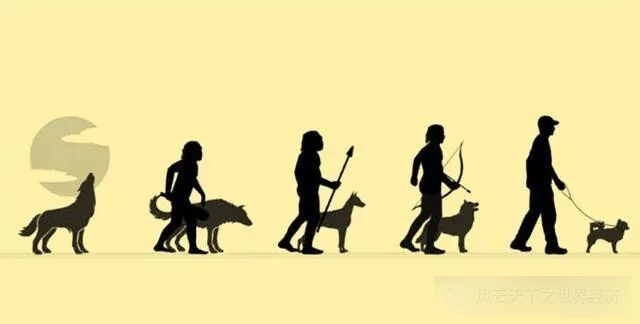
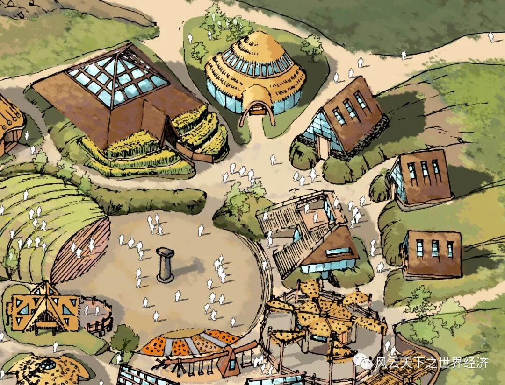
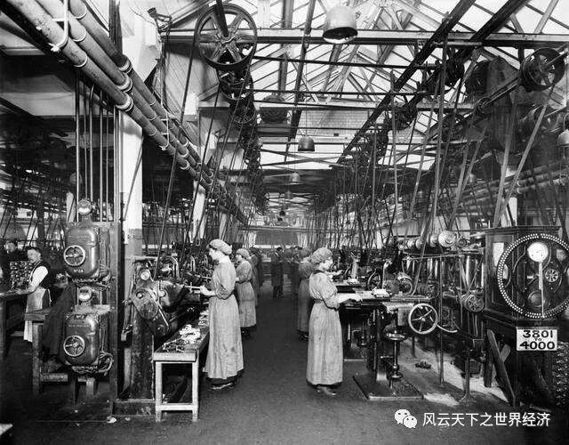

写下这些文字的是我《世界经济史》课堂上聪慧的同学们 ， 而这个系列早在2014年首次开课时就已预约。 八年后当她以如此风姿脱岫而出时， 我体会到了信念被兑付后的小欣喜。 深沉的经济史与年轻的思考在这里相遇， 激荡出灵动的弦歌， 以及渐次苏醒的思想。 为这个“小风云”系列， 我特意选了“总有人正年轻”这样一个名字。 其含义正如你所料， 这门课虽然以史为名， 但是我们真正寄予其中的是未来。 一万两千年世界经济史风云浩荡， 恰似过去留给我们的一个巨大谜面。 关于人类财富增长秘密的蛛丝马迹隐没其中， 等待年轻的他们去破解。 ——鲁晓东
历史上的农业革命将人类的生活方式从狩猎采集转变为饲养种植，是人类文明进程中的重要一步。回溯历史，全球各地的人们在农业革命后各自建立起依托于当地农业发展状况的经济、制度和文化体系，人们的生活方式也围绕不同的农业生产类型产生了巨大变化，并在农业发展的基础上迎来了工业革命，再一次显著改变了世界，直到世界成为我们现在所熟知的样貌。似乎当今世界的一切都是建立在农业革命的基础之上，而如果农业革命没有发生，在过去的一万多年里全球都过着狩猎采集的生活，世界必然会是另一种结局。
- 何以为食？何以为家？
资源相对人口的稀缺性是促使农业革命发生的重要动因，但是，当狩猎采集获取的食物无法满足日益增长的人口的需要时，除了驯化以外，人类或许还有其他的选择。

犬的驯化示意图
一方面，从其他动物演化发展的历史来看，人类的体质和习性也会为了适应环境而发生变化甚至进化。迫于饥饿，人类会探索出越来越多可供食用的事物，包括泥土、沙石、贝壳、珊瑚，甚至生物的排泄物等，人类的部分消化和排泄器官也会随之改变，维持生命活动所必需的食物量可能会下降，在食物尤其匮乏的季节也会减少所需要的能量，如动物冬眠等。人类的繁殖也可能因为日常食物和生活环境的改变而发生变化，如怀孕周期变长以充分积累能量、只在固定的食物充足的季节发情等，最终使人类的繁衍速度维持在资源足以供给的水平。
另一方面，从人类所具有的巨大脑容量和高智商的角度出发，人类也能够通过建立起一系列的制度来提高狩猎采集的效率和实现可持续发展。人类会从日常的观察学习经验中了解到作为食物来源的生物的相关知识并定居下来，有更丰富知识的人会因为其对群体的贡献以及所拥有的更多食物而受到部落其他人的尊重，进而发生阶级分化，建立起权力中心。领导者或统治者会从集体的角度出发，为了保证长期稳定的发展建立起一系列制度措施，如不能捕杀未成年的动物、只能用粗网捕鱼等，违者将会受到惩罚，计划生育和有效的避孕措施也会被实施以控制人口的迅速增长。拥有完善制度的组织将吸引周边的人前来定居，从而形成聚落。
综合来看，通过拓宽供给、减少需求、提高效率，人类依旧可以在相对较长的时期内获取较为稳定的食物来源，同时从居无定所向定居转变。
- 没有牛郎织女，仍有哥伦布
错过农业革命可能会使人类的生理特征和生活习性发生显著变化，但智慧的大脑仍然保证了人类可以定居、建立有效率和可持续的组织形式、发展出充满想象力和创造性的早期文明。由于没有农业，也没有农耕工具革新带来的显著技术进步，人类的发展速度会十分缓慢，改造自然的能力较弱。
在漫长的历史时期里，人类会小规模地聚居在一个食物来源较为丰富、交通便利、且有天然屏障的聚落里，聚落中有严格的政治等级。聚落中的绝大多数人都需要每天外出狩猎和采集，为了实现长久稳定的发展，每次外出只能带回有限数量的食物以满足基本需求和应对突发危机。

史前聚落示意图
狩猎采集者的闲暇时间会很多，从而能够创造出更丰富的文化成果，如绘画、音乐、诗歌等，对发饰、妆容、服装等也会有更多元化的需求。聚落中的统治阶级数量极少（少于农业革命后的奴隶社会），仅包括世袭的首领、德高望重具有丰富狩猎知识的智囊团和宗教相关的巫师等，下层的狩猎采集阶级可能通过考核跃升为统治阶级。
随着聚落的缓慢发展，邻近的各聚落之间也会交流融合，从而在一些较为空旷平坦的地区（如美索不达米亚、尼罗河流域、黄河中下游等）形成有一定规模的政权组织。在聚落间彼此交流的过程中，各地区天然物产的差异性也会带来跨境贸易的需求，催生货币和商品经济。为了寻求更多的财富，当技术条件成熟时人们也会进行远洋贸易，对海洋进行深度开发，全球各地的人最终也会被发现，只不过地理大发现的时间会远远晚于有农业革命时的情况。
美索不达米亚文明遗迹：哈桑凯伊夫古镇墓园遗址
总体上说，农业革命就像给人类文明进程按下了倍速键。当农业革命始终不发生时，日出而作日入而息、你耕田来我织布的农业社会场景不会再出现，但只要有制度保障资源的可持续供应，人类依然可以在技术和文化上取得重大成就，商业贸易也会最终发生，各地区人类的联系也将日益紧密。
- 我们还能听到机器的轰鸣和键盘的敲击声吗？
根据之前的分析，错过农业革命的人类可能通过自身体质的转变和制度的保障从而继续在狩猎采集的模式中生存下来，但是，人口规模增长会十分缓慢，专业化和分工程度也很低。在此背景下，工业革命和之后的信息革命或许都不再会发生。
与农业革命类似，工业革命和信息革命也可从需求和供给两个角度分析其动因。
从需求上看，当人口数量始终维持在较低水平，而资源又被合理可持续地开发时，人类完全可以通过简单的狩猎采集实现自给自足，对资源的需求不会超过其供给量，也就不会产生对技术革新的强烈需求。当今世界某些仍处在狩猎采集阶段的原始部落也都早已探索出与自然和谐共生之道，长久地保证可再生的资源能够满足部落居民的需求，因而他们也没有使用高强动力的机器的需要，也不会有使用计算机完成精密快速的运算的需求。

工业革命旧照
从供给上看，狩猎采集无法为人类提供稳定、大规模的单一产品，如足以供给棉纺织业使用的棉花等，因此大规模的手工业也很难发展起来，也就无法为纺织机器或其他手工业部门机器提供必要的基础性技术经验和知识。另外，大多数人仍旧需要从事日常的狩猎采集工作，难以从中分离出来从事需要集体力量的采煤和挖矿，也就无法为机器运转提供基本的动力来源，更不可能进行更系统化的科学研究，工业革命和信息革命都不会发生。
综上所述，错过农业革命以后人类改造自然的能力将远低于农业革命后的情况，但人类依然可以发挥有限的智慧，如建立与自然和谐共生的制度体系和组织形式等，来保证长久稳定的繁衍和生存。我们或许不再能够享受今天早已习以为常的方便快捷和高效率，但也有可能在那个平行时空享受朴素和谐、简单纯粹的快乐和满足。
（全文图片来自网络）